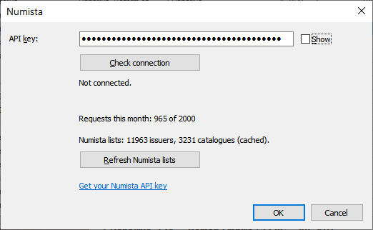

Numista: connection and requests

Screenshot: images/05-numista-settings.png
Your API key
- Register on numista.com.
- Request your API key (signed in to Numista): en.numista.com/api/api_key.php.
- Enter the key in Numista → Connect / Settings and press Check connection.
Each user uses their own key. The key is stored only in CoinsCollection.ini next to the program.
Requests and quota
The free Numista key allows 2000 requests per month. Every result window shows how many requests the operation used and how many are used this month.
- Answers are cached in
Numista\: the same type is never requested twice. Coins of one type from different years with the same catalogue number cost requests only once — the other years take the answers from the cache. The auto-link confirmation shows how many requests will really be sent. - Photos are files of the Numista website, not API requests — they do not use the quota.
- Typical costs: linking a coin — 3–5 requests; uploading checked items — 1 per item plus 2 per run; rarity index — 1 per run.